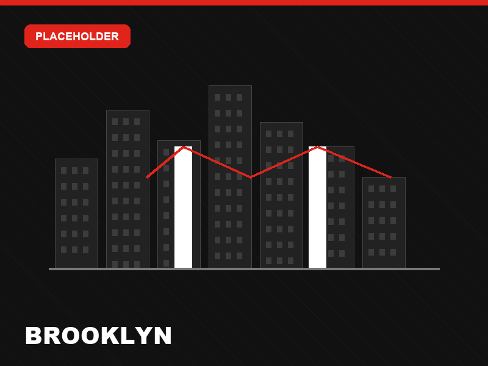
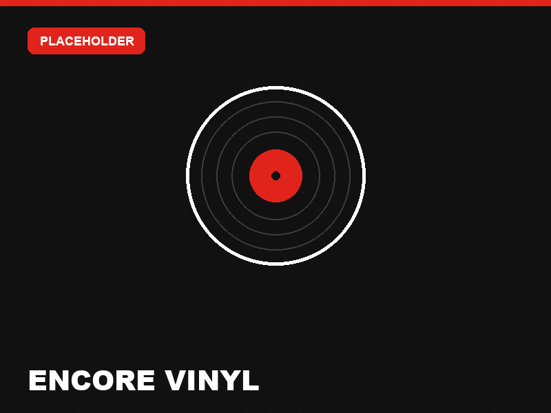
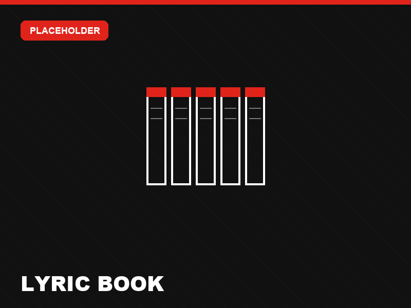
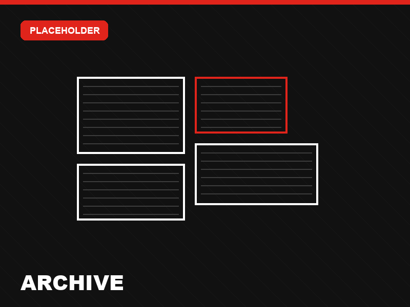
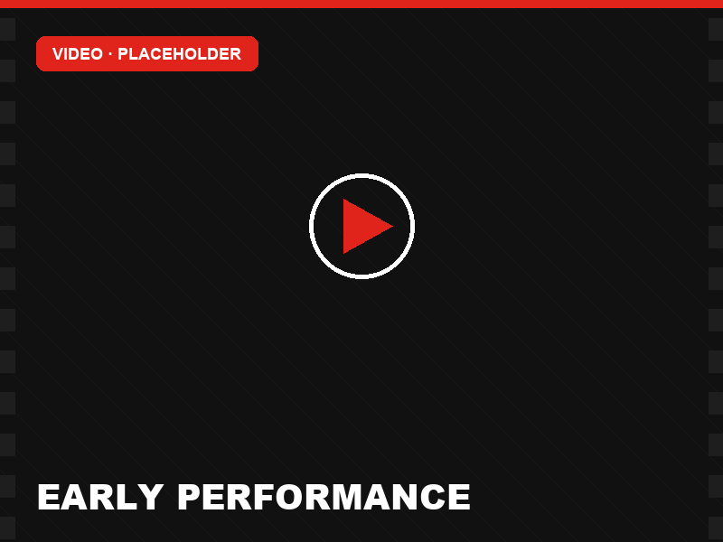
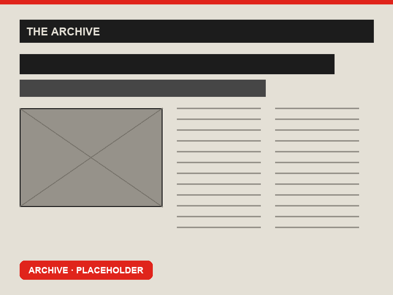

The Early Years
[placeholder]
Brooklyn Public Library · Exhibition
[placeholder — one-line exhibition positioning statement]
The Concept
“Brooklyn is the bridge” — the city that became the launchpad for Machel Montano's international career, carrying soca from Trinidad and Tobago to the world.
Why Brooklyn?
Brooklyn is home to the largest Caribbean community outside the West Indies — and the launchpad that carried soca from Trinidad and Tobago to the world.

Act I · 1982 —
[placeholder — where it all begins: a seven-year-old in Trinidad & Tobago, the birthplace of soca and Carnival]
Act II · The Engine
[placeholder — Brooklyn, home to the largest Caribbean community outside the West Indies, becomes the engine of an international career]
Selected for choreographer Marie Brooks' summer program; debuted at Madison Square Garden at age nine.
Joined an all-star cast for Trinidad and Tobago's answer to “We Are The World,” cut in Trinidad and Brooklyn.
“Big Truck” — written in Brooklyn — was an early signpost of the future King of Soca.
Headlined and sold out the Garden, including back-to-back shows.
Led the Eastern Parkway parade alongside Harry Belafonte.
First soca artist to headline the Labor Day concert, prompting a rename to “On Da Reggae and Soca Tip.”
First Caribbean artist to star in a feature film — dubbed by Billboard “soca's Purple Rain.”
Honoured at the inaugural Caribbean Music Awards at Brooklyn's Kings Theatre.
Presented the keys to New York City by Mayor Adams; four sold-out nights at the Apollo Theater.
Marquee act at the inaugural Planet Brooklyn Festival.
Named by Brooklyn's Everybody's Magazine, a longstanding voice of Caribbean culture.
“Encore,” his 12th Road March title, lit up a Times Square jumbotron.
Act III · Global
[placeholder — from Brooklyn, the reach goes global]
[placeholder — note on figures / sources]
The Exhibition
[placeholder — a 40+ year archival collection, preserved by Elizabeth Montano, shown for the first time in Brooklyn]
[placeholder]
[placeholder]
[placeholder]
[placeholder]

A dedicated listening station for the new album.

A 5-volume, hand-bound book of Machel's lyrics (1982–2026), featuring a custom font based on his handwriting.

A wall display of local newspapers and foreign magazines.
iPads and projectors showing live performances and other content.
Before Social Media
Long before hashtags and viral clips, Machel's rise was captured on tape and in print — television appearances, early performances, local newspapers and foreign magazines.

[placeholder — clip details]
[placeholder — clip details]
[placeholder — clip details]

[placeholder — publication & date]

[placeholder — publication & date]

[placeholder — publication & date]
Footage and clippings shown are placeholders — final archive media to be added.
Plan Your Visit
Aug 21 — Sep 11, 2026
Brooklyn Public Library · Central Library
Free and open to the public
Preliminary — dates and programming subject to change.
Central Library, Grand Army Plaza
Central Library + Little Caribbean branches
Outdoor plaza, Central Library · followed by a DJ party · rain date Sep 4
Central Library
More Little Caribbean branch events — readings, steelpan and more — to be announced.
[placeholder]
[placeholder]
[placeholder]
[placeholder]
[placeholder]
Programs & Events
[placeholder — a borough-wide cultural and educational program]
[placeholder]
[placeholder]
[placeholder]
[placeholder]
[placeholder]
[placeholder]
Why Visit
A 40-year collection, shown in Brooklyn for the first time.
Spin “Encore” at the dedicated listening station.
Steelpan and Mas across the Little Caribbean branches.
Community activations where Brooklyn lives the culture.
[placeholder — a fan or community member on what Machel and soca mean to them]
[placeholder — a voice from the Little Caribbean community]
[placeholder — a fan on travelling to see the exhibition]
Takeaways
Documenting heritage so it endures for the next generation.
A story of community, culture, and creative roots.
Engaged through learning, music, and storytelling.